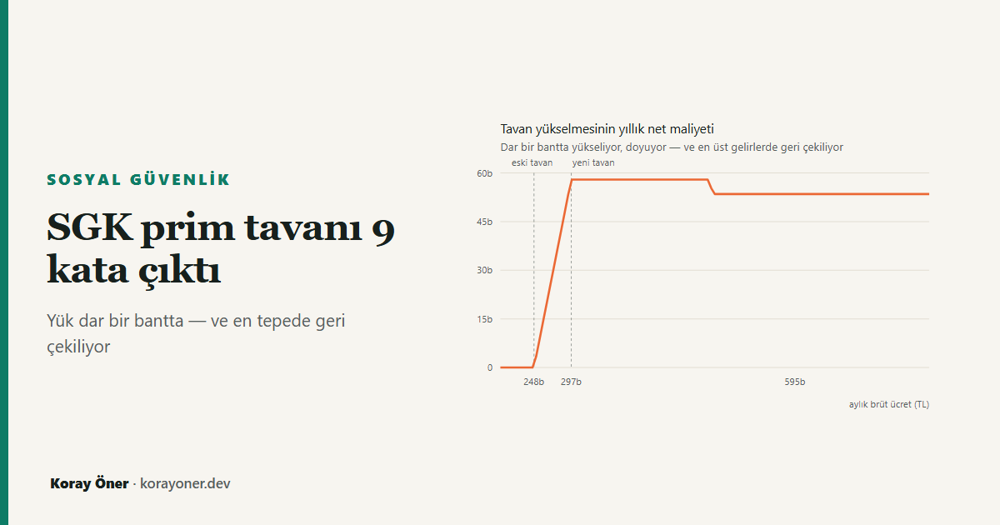

Kısa cevap
7566 sayılı Kanun, prime esas kazancın üst sınırını 1 Ocak 2026'dan geçerli olmak üzere brüt asgari ücretin 7,5 katından 9 katına çıkardı. 33.030 × 9 = 297.270 TL. Katsayı, elimizdeki bütün yıllarda 7,5'ti; bu onun ilk değişimi.
Etkilenen kitle dar. Aylık brütü 247.725 TL (eski tavan) altında olan hiç kimsenin bordrosunda tek kuruş değişmiyor. Etki 297.270 TL'de doyuyor — ötesinde ek prim artmıyor.
Tavandaki ücretli için: ek işçi primi yılda 89.181 TL. Prim gelir vergisi matrahından düşüldüğü için net kayıp bundan az: 57.968 TL. İşveren tarafında artış yılda 141.203 TL ve bunun vergi kalkanı karşılığı yok.
Ama bu bir vergi değil. Yüksek prime esas kazanç emekli aylığını doğru orantılı büyütüyor. Bugünün kurallarıyla ölçüldüğünde fazla prim 4,5–5,8 yıllık emeklilik süresinde geri geliyor — ve bu aralık kariyer biçiminden neredeyse bağımsız.
Ne değişti?
Prim tavanı bir tutar olarak değil, asgari ücretin katı olarak tanımlı. 5510 sayılı Kanun m.82 üst sınırı alt sınıra bağlıyor; değişen şey katsayı. Tavanın her yıl büyümesi bu yüzden haber olmuyordu: asgari ücret artınca tavan da artıyordu, ama oran sabitti.
| Yıl | Asgari ücret (brüt) | Tavan katsayısı | Aylık prim tavanı | Not |
|---|---|---|---|---|
| 2020 | 2.943 TL | 7,5 kat | 22.073 TL | — |
| 2021 | 3.578 TL | 7,5 kat | 26.831 TL | — |
| 2022 | 5.004 TL | 7,5 kat | 37.530 TL | — |
| 2023 | 10.008 TL | 7,5 kat | 75.060 TL | — |
| 2024 | 20.003 TL | 7,5 kat | 150.019 TL | — |
| 2025 | 26.006 TL | 7,5 kat | 195.041 TL | — |
| 2026 | 33.030 TL | 9 kat | 297.270 TL | katsayı değişti |
Tablodaki son satır, altı yılın tek istisnası. Katsayı değiştiği için 2026'da tavan asgari ücretten daha hızlı arttı: asgari ücret %27,01 yükselirken tavan %52,41 yükseldi. Aradaki fark tam olarak 9/7,5 = 1,20 oranı.
Kim etkileniyor: keskin bir aralık
Tavan, primin hesaplandığı kazancın üst sınırı. Yükselmesi yalnızca eski tavanın üstünde kazananları ilgilendiriyor, çünkü altında kalanların prime esas kazancı zaten gerçek brütleri.
Prime esas kazancın genişleyen kısmı aylık 49.545 TL (297.270 − 247.725). İşçi payı bu tutarın %15'i (%14 SGK + %1 işsizlik), işveren payı %23,75'i (%21,75 + %2). Yıllığa çevrildiğinde ek yük 89.181 TL ve 141.203 TL.
| Aylık brüt | Ek işçi primi (yıllık) | Vergi kalkanı | Net kayıp (yıllık) | İşveren artışı (yıllık) |
|---|---|---|---|---|
| 227.907 TL | 0 TL | — | 0 TL | 0 TL |
| 247.725 TL | 0 TL | — | 0 TL | 0 TL |
| 270.020 TL | 40.131 TL | %35,0 | 26.085 TL | 63.541 TL |
| 297.270 TL | 89.181 TL | %35,0 | 57.968 TL | 141.203 TL |
| 401.315 TL | 89.181 TL | %35,0 | 57.968 TL | 141.203 TL |
| 891.810 TL | 89.181 TL | %40,0 | 53.509 TL | 141.203 TL |
Asıl bulgu: en çok kaybeden, en çok kazanan değil
Tablodaki vergi kalkanı sütunu yazının asıl bulgusunu taşıyor. Sigorta primi gelir vergisi matrahından düşülüyor (GVK m.63). Yani ek prim ödeyen kişi, aynı anda daha az gelir vergisi ödüyor. Geri gelen kısım kişinin marjinal vergi oranı kadar:
net kayıp = ek prim × (1 − marjinal vergi oranı)
Ek prim herkes için aynı — 89.181 TL. Ama kalkan değil. %35 bandındaki biri primin %35'ini geri alıyor, %40 bandındaki biri %40'ını. Aylık brütü 479.270 TL'yi aşan biri yıl boyunca %40 bandında kaldığı için kaybı 53.509 TL'ye iniyor.
Sonuç ters duruyor ama aritmetiği basit: tavandaki ücretli, tavanın üç katını kazanandan yılda 4.459 TL daha fazla kaybediyor — oransal olarak %8,3 daha fazla. Prim tabanı tavanla sınırlanmış, vergi kalkanı sınırlanmamış.
Bu, sitedeki vergi kaması yazısının ölçtüğü kırılmanın yer değiştirmesi: zorunlu yükün marjinal oranı prim tavanında düşüyordu, o düşüş noktası artık 247.725 TL değil 297.270 TL.
İşveren tarafında kalkan yok
İşveren için aynı genişleme yılda 141.203 TL ek maliyet demek ve burada ücretlininkine benzer bir geri dönüş yok — prim işveren açısından gider, ama gider yazmak kurumlar vergisi matrahını ilgilendirir, bordronun kendisini değil. Tavanın üstünde çalışan her kişi başına işveren maliyeti, ücrete tek kuruş zam yapılmadan bu kadar arttı.
Bu, ücret pazarlığına da giren bir sayı: aynı brütü korumak işverene yıllık 141.203 TL daha pahalıya geliyor. İşveren maliyeti hesaplayıcısı bu farkı kendi ücretinizle gösterir.
Vergi mi, zorunlu emeklilik alımı mı?
Buraya kadar olan her şey maliyet tarafı. Ama prim vergi değil: karşılığında bir hak doğuyor. Emekli aylığı, güncellenmiş ortalama prime esas kazanç ile aylık bağlama oranının çarpımı. Prime esas kazanç yükselince aylık da yükseliyor — üstelik doğru orantılı olarak.
Soru şu hâlde şöyle kuruluyor: fazla ödenen prim, emekli aylığındaki artışla kaç yılda geri gelir? Aşağıdaki tablo, hem eski hem yeni tavanın üstünde kazanan biri için bunu kariyerin farklı noktalarında ölçüyor. Geçmiş günler eski tavandan, kalan günler yeni tavandan sayılıyor.
| Geçmiş + kalan hizmet | Ortalama PEK | Aylık artışı | Toplam net maliyet | Başabaş |
|---|---|---|---|---|
| 20 + 5 yıl | 257.634 TL | 5.114 TL | 289.838 TL | 4,7 yıl |
| 20 + 10 yıl | 264.240 TL | 10.130 TL | 579.677 TL | 4,8 yıl |
| 20 + 15 yıl | 268.959 TL | 15.091 TL | 869.515 TL | 4,8 yıl |
| 10 + 20 yıl | 280.755 TL | 20.260 TL | 1.159.353 TL | 4,8 yıl |
| 5 + 25 yıl | 289.013 TL | 25.325 TL | 1.449.191 TL | 4,8 yıl |
Başabaş süresinin kariyer biçiminden bu kadar bağımsız çıkması ilk bakışta tuhaf. Maliyet kalan hizmet süresiyle doğru orantılı büyüyor, ama kazanç toplam hizmet süresine bölünüyor; ikisinin oranının sabit kalmaması gerekirdi. Dengeyi kuran şey aylık bağlama oranının prim günüyle birlikte yükselmesi: uzun kariyerde ortalama daha çok seyreliyor, ama seyrelen ortalama daha yüksek bir oranla çarpılıyor. Çok uzun kariyerlerde oran tavana dayandığı için başabaş uzuyor — ölçtüğümüz en geniş aralık 4,5 ile 5,8 yıl arasında kaldı.
Emeklilikte geçirilen ortalama sürenin bunun katbekat üstünde olduğu düşünülürse, bugünün kuralları altında bu değişim ücretli için kötü bir alım değil. Yükü asıl taşıyan taraf, karşılığında hiçbir hak doğmayan işveren.
Yöntem, sınırlar ve varsayımlar
Bordro tarafındaki bütün sayılar sitenin bordro motoruyla tam yıl benzetimi yapılarak üretildi; tavan dışındaki hiçbir parametre değiştirilmedi. "Tavan 7,5 katta kalsaydı" karşı olgusu, 7,5 sayısı elle yazılarak değil bir önceki yılın katsayısı okunarak kuruluyor — bu yüzden katsayı bir daha değiştiğinde yazı kendiliğinden doğru karşı olguyu kullanır.
Emeklilik tarafı bugünün kurallarıyla ve bugünün parasıyla ölçüldü. Şunlar modellenmedi: iskonto, ölüm riski, aylık bağlama oranının ileride değişme ihtimali ve kişinin bütün kariyeri boyunca tavanın üstünde kalıp kalmayacağı. Bunlar önemsiz oldukları için değil, tahmin edilmeleri gerektiği için dışarıda — bu yazı ölçebildiğini yazıyor.
Vergi kalkanı hesabı kişinin yıl boyunca hangi dilimde kaldığına duyarlı; tablodaki oranlar tam yıl benzetiminin çıktısı, kabaca alınmış dilim oranları değil.
Kaynaklar
- 5510 sayılı Sosyal Sigortalar ve Genel Sağlık Sigortası Kanunu m.82 — prime esas günlük kazancın alt ve üst sınırı; üst sınırın alt sınırın katı olarak tanımlanması.
- 7566 sayılı Kanun — prime esas kazanç üst sınırının 1 Ocak 2026'dan geçerli olmak üzere asgari ücretin 9 katına çıkarılması.
- 193 sayılı Gelir Vergisi Kanunu m.63 — sigorta primlerinin ücretin gerçek safi değerinin tespitinde indirilmesi (vergi kalkanının dayanağı).
- 5510 sayılı Kanun m.29 ve Geçici m.2; 506 sayılı Kanun Geçici m.82 — aylık bağlama oranı kademeleri.
- Hesaplamalar: bordro motoru ve emeklilik motoru,
parametreler
bordro/parametreler.js.
Sık sorulan sorular
2026 SGK prim tavanı ne kadar?
Aylık 297.270 TL. Brüt asgari ücretin (33.030 TL) 9 katı. Günlük üst sınır 9.909 TL.
Maaşım tavanın altındaysa ne değişir?
Hiçbir şey. Aylık brütünüz 247.725 TL'nin altındaysa prime esas kazancınız zaten gerçek brütünüzdü; tavanın yükselmesi sizi ilgilendirmiyor.
Neden tavandaki kişi daha çok kaybediyor?
Ek prim herkes için aynı (89.181 TL/yıl) ama prim vergi matrahından düşüldüğü için geri gelen kısım marjinal vergi oranına bağlı. Üst dilimdeki kişi aynı primi daha ucuza ödüyor.
Bu para boşa mı gidiyor?
Hayır. Prime esas kazanç emekli aylığını doğru orantılı büyütüyor. Bugünün kurallarıyla fazla prim 4,5–5,8 yıllık emeklilik süresinde geri geliyor.
İşveren de aynı şekilde geri alıyor mu?
Hayır. İşveren payındaki yıllık 141.203 TL artışın bordro içinde bir karşılığı yok; işveren için bu doğrudan maliyet artışı.
İlgili araçlar ve yazılar
- Brüt–net maaş hesaplama — kendi ücretinizle ay ay bordro.
- İşveren maliyeti hesaplama — aynı brütün işverene maliyeti.
- Vergi kaması: ücretin gerçek yükü — zorunlu yükün prim tavanında kırılması.
- Emekliliğin finansal matematiği — aylık bağlama oranı ve ortalama kazancın aylığa dönüşümü.
- Zam net maaşa ne kadar yansır? — tavanın işareti döndürdüğü yer.